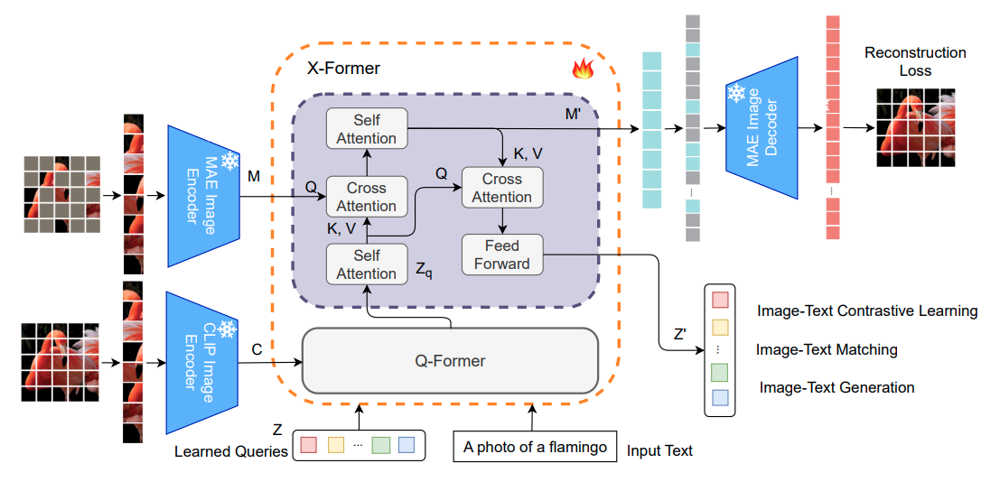
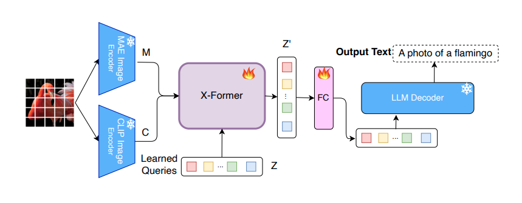
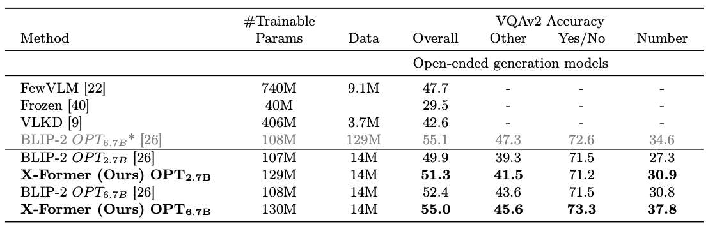
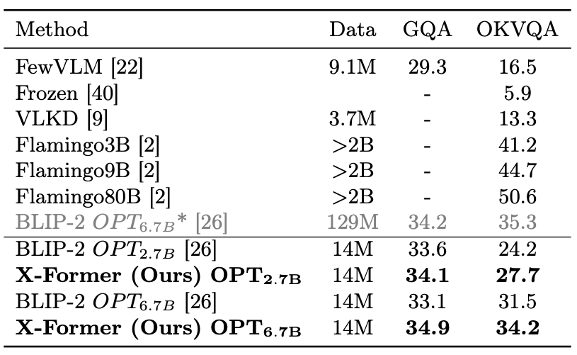
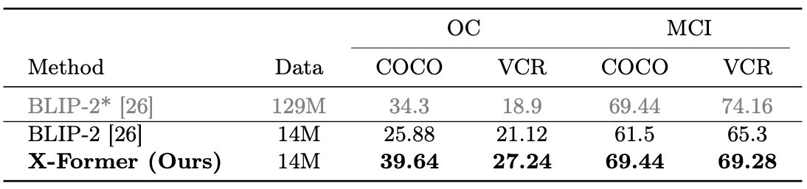

Recent advancements in Multimodal Large Language Models (MLLMs) have revolutionized the field of vision-language understanding by integrating visual perception capabilities into Large Language Models (LLMs). The prevailing trend in this field involves the utilization of a vision encoder derived from vision-language contrastive learning (CL), showing expertise in capturing overall representations while facing difficulties in capturing detailed local patterns. In this work, we focus on enhancing the visual representations for MLLMs by combining highfrequency and detailed visual representations, obtained through masked image modeling (MIM), with semantically-enriched low-frequency representations captured by CL. To achieve this goal, we introduce X-Former which is a lightweight transformer module designed to exploit the complementary strengths of CL and MIM through an innovative interaction mechanism. Specifically, X-Former first bootstraps vision-language representation learning and multimodal-to-multimodal generative learning from two frozen vision encoders, i.e., CLIP-ViT (CL-based) and MAEViT (MIM-based). It further bootstraps vision-to-language generative learning from a frozen LLM to ensure visual features from X-Former can be interpreted by the LLM. To demonstrate the effectiveness of our approach, we assess its performance on tasks demanding detailed visual understanding. Extensive evaluations indicate that X-Former excels in visual reasoning tasks involving both structural and semantic categories in the GQA dataset. Assessment on fine-grained visual perception benchmark further confirms its superior capabilities in visual understanding.

Figure:
Overview of X-Former which extends Q-Former by introducing a dual cross-attention module to capture both local and global visual features.

Figure:
X-Former LLM Alignment. X-Former queries are aligned with a frozen LLM, FC layer adapts the query output(Z′) to LLM embedding space
Zero-Shot Results on VQAv2 dataset, *indicates the result is obtained using the official checkpoint.


Fine-Grained Visual Perception evaluation on Object Counting (OC) & Multi-class Identification (MCI) tasks. * evaluated using official checkpoint

@inproceedings{Swetha_Xformer_ECCV2024,
title={X-former: Unifying contrastive and reconstruction learning for mllms},
author={Sirnam, Swetha and Yang, Jinyu and Neiman, Tal and Rizve, Mamshad Nayeem and Tran, Son and Yao, Benjamin and Chilimbi, Trishul and Shah, Mubarak},
booktitle={European Conference on Computer Vision},
pages={146--162},
year={2024},
organization={Springer}
}